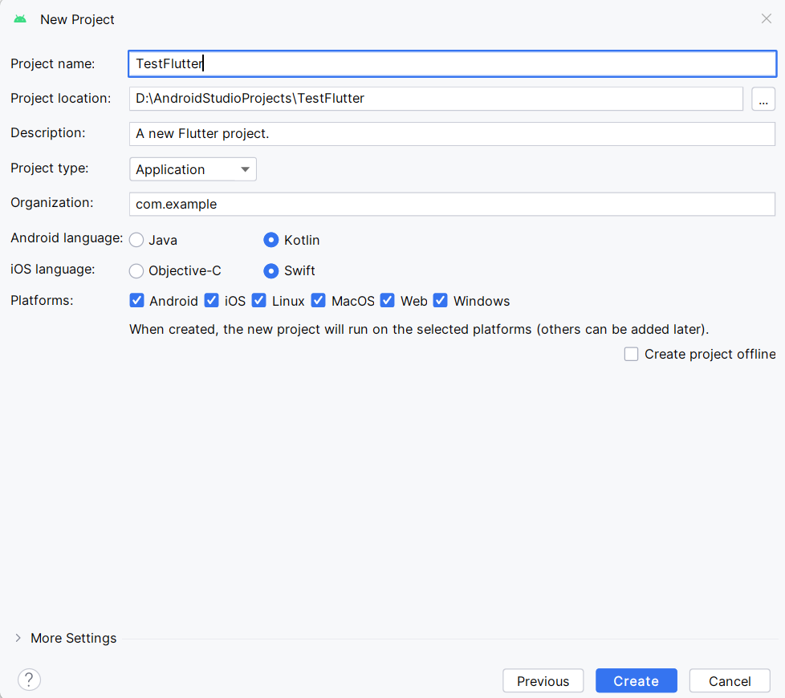

You will have to restart the IDE after so go ahead and do so.

Flutter is a new generation of multiplatform frameworks that lets you write code in one language, but then compile it to another platform. Initially, there were frameworks like Titanium SDK (https://titaniumsdk.com/), Electron (https://www.electronjs.org/) React and React Native. These frameworks used JavaScript or Typescript to create the app, and then the native platforms were basically web browsers embedded as an application.
Flutter is a next-generation of this concept that uses a language called Dart to write an application, and then the Dart code gets trans-compiled to other native languages (Trans-compiled means that it's directly translated to another language like Java, C++ or Swift and then that gets compiled to native code). Microsoft launched a similar platform called MAUI (Multi-platform App UI) which uses C# to compile to machine code for each platform. However, there is a new technology called Web Assembly, which is a low-level set of assembly instructions that browsers have all agreed to support by compiling to native code for each processor. It's similar to the idea of Java, where high-level programming languages are compiled to an intermediate machine bytecode, however with Java, Oracle controls the design of the virtual machine and you have to install it separately to run the code. With Web Assembly, the major browsers (Safari, Firefox and Chrome) have agreed on the language specification and they can each implement how Web Assembly will be compiled to the processors. Also, the technology will be built in to the browsers so there won't be any need to install a Virtual Machine. You can expect that Flutter and MAUI will shift to produce Web Assembly code in the near future.
For now, you can select to run your Flutter program on your local computer, on a web browser, or on an emulator:
 You should eventually see a Windows program running.
You should eventually see a Windows program running.